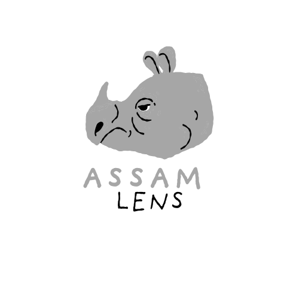

"অসম: প্ৰকৃতি আৰু সংস্কৃতিৰ সংগমস্থল অসম ভাৰতৰ উত্তৰ-পূব দিশত অৱস্থিত এক বৈচিত্ৰ্যপূৰ্ণ ৰাজ্য। ইয়াৰ ভৌগোলিক অৱস্থান, চহকী বুৰঞ্জী আৰু সাংস্কৃতিক পৰম্পৰাই ৰাজ্যখনক এক সুকীয়া পৰিচয় দিছে। অসমৰ বিষয়ে কিছু গুৰুত্বপূৰ্ণ তথ্য: প্ৰাকৃতিক সৌন্দৰ্য্য: অসমৰ মাজেৰে বৈ যোৱা বিশাল ব্ৰহ্মপুত্ৰ নদী আৰু ইয়াৰ উপনৈসমূহে ৰাজ্যখনৰ ভূমিভাগক উৰ্বৰ কৰি তুলিছে। অসম ইয়াৰ ঘন অৰণ্য আৰু বিশাল সেউজীয়া চাহ বাগিচাৰ বাবে বিশ্ববিখ্যাত। বন্যপ্ৰাণী: অসমত ৫ খন ৰাষ্ট্ৰীয় উদ্যান আৰু বহুতো অভয়াৰণ্য আছে। ইয়াৰে কাজিৰঙা ৰাষ্ট্ৰীয় উদ্যান বিশ্বৰ ভিতৰতে সৰ্বাধিক এশিঙীয়া গঁড়ৰ বাসস্থান হিচাপে জনাজাত। সংস্কৃতি আৰু উৎসৱ: অসমৰ মূল পৰিচয় হ’ল ইয়াৰ বাৰেৰহণীয়া সংস্কৃতি। বিহু (ৰঙালী, কঙালী আৰু ভোগালী বিহু) অসমীয়া সমাজ জীৱনৰ প্ৰাণ। ইয়াৰ উপৰিও বিভিন্ন জনগোষ্ঠীৰ মিলনভূমি হিচাপে অসমৰ লোক-সংস্কৃতি অতি চহকী। অৰ্থনীতি: অসম হৈছে বিশ্বৰ অন্যতম বৃহৎ চাহ উৎপাদনকাৰী অঞ্চল। ইয়াৰ বাহিৰে খাৰুৱা তেল (ডিগবৈ ভাৰতৰ পুৰণি তেল শোধনাগাৰ), প্ৰাকৃতিক গেছ আৰু মুগা ৰেচমৰ বাবেও অসম বিখ্যাত। ইতিহাস: আহোম স্বৰ্গদেউসকলে প্ৰায় ৬০০ বছৰ (১২২৮-১৮২৬) ধৰি এই ভূখণ্ডত শাসন চলাইছিল। শৰাইঘাটৰ যুদ্ধত আহোম সেনাপতি লাচিত বৰফুকনৰ বীৰত্বই অসমৰ ইতিহাসত এক গৌৰৱময় অধ্যায় হিচাপে চিহ্নিত হৈ আছে।".
"মই অসমীয়া বুলি পৰিচয়
দিবলৈ গৌৰৱ অনুভৱ কৰোঁ।"